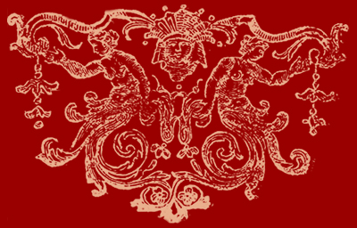

You have been blinded by the love of the flesh and subordinate reason to desire.
Women are fraught with sin. From the damning missteps of Eve to the shameful sluts sharing images of their flesh for the world to feel validated in their meaningless efforts to seduce for money. They seek nothing but lustful desire and to be seen as whores.
I know you seek me. I have seen countless others just like you. I know your smell. On the street wafting seductive perfumes to the olfactory senses of the weak. I feel you. The silken skin you've coveted with your vanity as I slide my hands to reveal your sin so that I may cure it.
"They are the ones who defiled a basic tenet of the LORD. Went further to poison others into forgoing their own innocence.
Wait not, go forth and sentence all those unpure to eternal damnation."
Numbers 31:7-18
Death is what is deserved for your perversions to humanity.
However, I pity your souls. You are weak and unable to fight the temptations of Lucifer. You are not without faults. Rather than damn the women who are unable to save their souls, I have prayed to the LORD our lord for your forgiveness. I weep for your destiny in hell. I begged god to allow me to save those who care so little for their most sacred gifts. The LORD has answered.
I am here to deliver the word of our LORD god that no woman may need be killed for laying with another man when I purify their corrupted essence with my radiant inner soul.
The LORD, your god, has delivered to me a divine ability which cleanses the soul and may deliver you from Satan. You may be re-born through the light of my loins. Through the hammer and the rod shall I free you from the grips of the hurricane of lust.
When I give myself into you, you will have dreamed of this moment many times before. Yet Lucifer will demand you fight and resist the great light that will burst forth. God's hand itself will be reaching through to your soul to set it free. You will not see it for you are but a mortal in need of salvation. You will not hear it. As the Devil is cunning and will convince you there is no escape from your path. There will be pain, the Devil will grasp and claw onto your insides as you become more pure, but as the holy essence overwhelms his dark power, greater joy will wash over you. Your recompense for seeking salvation will be that of the seat earned by the hand of god as it has been spoken to me.
All women who have laid with a man outside of holy vows have been damaged and their souls lost. The men corrupted by your sinful lust. The damage done to the flock of the earth is immense. I am your only redemption. Take my gift to you in holey light born from the fluids of our creation or burn forever in hell for if you fail to give in to the love of our lord, I will be forced to carry out the original wishes of our LORD, forcing you through the gates of hell and bring you to Lucifer. I take no pleasure in your desecration. This is our burden and our pain to share.
The god light of my loins will cleans the sinful. These are the wishes of our all mighty god.
